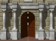
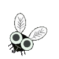

外国語を学習していると、日本語が新鮮に感じることがあります。特に日本人と「おと」のつながりは深く、日本語の中にどれだけの擬声語（擬音語／擬態語）があるかを見ればよくわかると思います。そしてそんな音でできた日本語を考えるとき、日本語って面白いなあと感じるわけです。
擬音語はものが発する音を表したもので、
心臓がドキドキする。
ガラスがガチャンと割れる。
風がビュービューと吹く。
おもしろいのは擬態語。音を出さないものについて字を当てて表現する。
ポカポカの日だ。
頭がガンガンする。
バラバラに散らかっている。
外国人にこういった日本語を教えると結構面白がってくれます。ツルツル、パンパン、トントン、ピョンピョン、カンカン、ザーザー、テクテク、カサカサ、ドスンドスン、 時に、ボーっと、シーンと、ポワーンと・・・・、なんだこの日本語！？と。
もちろん英語やフランス語にもonomatopoeiaやonomatopeeと訳語があるので、こういった表現（擬声語）は存在します。ただ日本語の擬声語の数は比べ物にならないくらい多い。
そうした音に対する人の捉え方をみると、言語の違いだけではなく、文化や習慣の違いも見えてきます。日本人は音に対してとても敏感だと思います。
では、いろんな国の「静けさ」をあらわす表現を見てみましょう。
まず日本代表：松尾芭蕉 『古池や蛙飛び込む水のおと』
この俳句では、蛙がケロケロでもなクワックワッでもなく、古池に飛び込ませることで「静けさ」の音が伝わってくる素晴らしい作品です。蛙の擬音語ではなく、蛙が飛び込んだときに水がポチャッとなるイメージを頭の中に描くので水のはじく擬音語ですね。その音は俳句の中には文字として記されていませんが、共通の文化を持っている人間ならばそこからジワリと静けさが浮かび上がってくることでしょう。
さてお隣、中国代表：『推敲』文章を何度も練り直すという意味ですが、その由来を見てみると；
唐の時代、 賈島という人物が「僧は推す月下の門」という一句を口ずさんだ後、「推す」のがいいか「敲く（叩く）」のがいいかと悩んでしまった。そこで漢詩の大家でもあった韓愈が、「それは敲く方がいいだろう、月下に音を響かせる風情があってよい」と言ったそうです（ウィキペディアより）。日本と同じく、音を発することによって周りの静けさが浮かんでくるようですが、日本のように自然が生み出すものではなく、人間の発する力強い音というのが対照的に感じます。

ヨーロッパはフランス代表：《Un ange passe.》 「天使が通る」
音ではありません。 天使が通るのです！でもその静けさが伝わってきますよね。そう、日本語でいう「しーん」とした一瞬に、目の前を天使が通過して行きそうです。教会の中のあの厳かな空間を『静けさ』のイメージとして持っているんでしょうね。こちらも平和そうな静けさが感じられます。

こうして並べてみると、同じ『静けさ』を表現していますが、文化によって『異なった静けさ』が見えてきます。
でも、フランス人だって音を使って静けさを表すこともありますよ。 さあ、どんな『静けさ』が浮かんできますか？
《On entend voler une mouche.》 「ハエの羽音が聞こえてくる」くらい静か。うん、これも周りが「しーん」としていますね。
